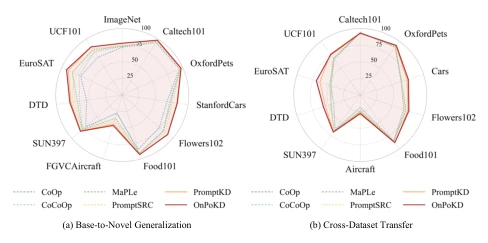
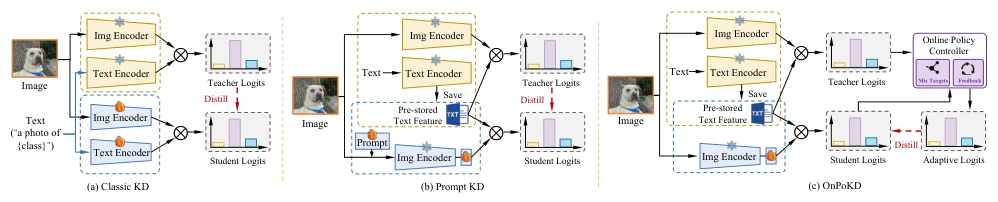
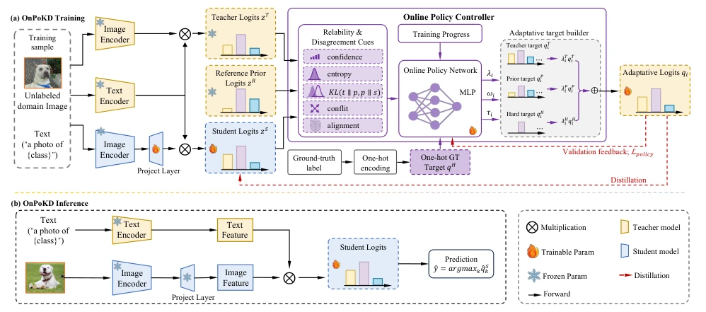
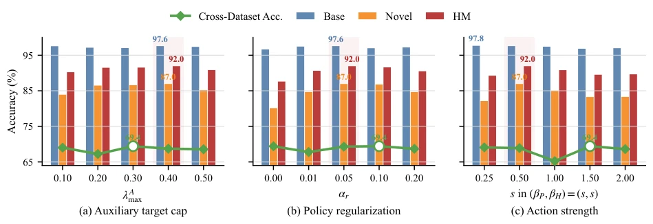

This paper delivers a lesson to the VLM distillation field: do not always assume every word from the teacher is truth. The authors keenly point out that blindly imitating teacher predictions in scenarios involving low-quality multimodal data or distribution shift is simply a suicidal act of "accepting everything as is". The core highlight of OnPoKD lies in transforming "how to set the distillation target" from a rigid recipe into a dynamic strategy, akin to a shrewd coach who knows when to listen to the teacher, when to trust priors, and when to directly apply hard labels. However, although this "online strategy" sounds sophisticated, it essentially relies on validation set feedback for parameter tuning, belonging to "open-book exam" style optimization; without a clean validation set, this strategy might have to "run naked". Additionally, the extra computational overhead during training (memory increase by 51%) is a significant burden in resource-constrained edge deployment, although it has no impact during inference, the training cost remains. Overall, this is a precise strike against "blind distillation", but do not expect it to solve all problems of dirty and messy data.
研究动机Motivation
现有的视觉语言模型（VLM）蒸馏方法，如 PromptKD (Li et al., 2024)，通常假设教师模型在所有样本上都是可靠的，因此直接将教师预测作为固定的软目标。然而，在 Base-to-novel 泛化和跨数据集迁移任务中，经过微调的教师模型往往在基类上表现优异，但在未见过的类别或分布偏移的域上却可能产生幻觉或错误预测 (Recht et al., 2019; Hendrycks et al., 2021)。此时，若学生模型仍强行拟合这些不可靠的教师预测，不仅无法学到正确的知识，反而可能破坏预训练模型中宝贵的零样本先验知识 (Zhou et al., 2022b; Khattak et al., 2023a)。此外，随着训练进行，学生模型的能力在变化，早期和晚期的最佳监督信号也应不同，而固定目标无法适应这种动态变化。因此，亟需一种机制，能根据样本的可靠性、教师与先验的冲突程度以及训练阶段，动态调整蒸馏目标的构成，而非一成不变地“照单全收”。
Existing vision-language model (VLM) distillation methods, such as PromptKD (Li et al., 2024), typically assume the teacher model is reliable on all samples, thus directly using teacher predictions as fixed soft targets. However, in Base-to-novel generalization and cross-dataset transfer tasks, fine-tuned teacher models often perform excellently on base classes, but may produce hallucinations or erroneous predictions on unseen categories or domains with distribution shift (Recht et al., 2019; Hendrycks et al., 2021). At this time, if the student model still forcibly fits these unreliable teacher predictions, it not only fails to learn correct knowledge but may also destroy the valuable zero-shot prior knowledge in the pre-trained model (Zhou et al., 2022b; Khattak et al., 2023a). Furthermore, as training proceeds, the student model's capabilities change, and the optimal supervision signals in early and late stages should differ, while fixed targets cannot adapt to this dynamic change. Therefore, a mechanism is urgently needed that can dynamically adjust the composition of the distillation target based on sample reliability, the degree of conflict between teacher and prior, and training stage, rather than "accepting everything as is" unchanged.

Figure 1: Comparison of OnPoKD with existing VLM adapta- tion methods. (a) Base-to-novel generalization harmonic mean (HM). (b) Cross-dataset transfer accuracy.

Figure 2: Comparison of different distillation paradigms for vision-language adaptation. (a) Vanilla VLM distillation matches the student to a fixed teacher target. (b) PromptKD distills from a stronger adapted teacher. (c) OnPoKD uses an on-policy controller to build a sample-wise adaptive target.
OnPoKD proposes a distillation framework based on online strategies, whose core is a lightweight policy controller (Policy Controller). The overall process is divided into two stages: training and inference; during training, the controller constructs adaptive distillation targets in real-time; during inference, the controller is removed, retaining only the student model, ensuring zero additional inference cost. Specifically, the controller first extracts reliability and conflict cues (such as confidence, entropy, KL divergence, label disagreement, etc.) from the teacher model, student model, and frozen zero-shot prior model, and constructs a state vector combined with training progress. Subsequently, a multi-layer perceptron (MLP) predicts three actions: mixing weights (determining the proportion of teacher, prior, and hard labels), sample weights, and distillation temperature. These actions, after bounded constraints (Bounded Policy Actions), are used to construct the final adaptive target $q_i$. For example, when teacher predictions are uncertain or conflict with priors, the strategy automatically increases the weight of priors or hard labels. The update of the strategy itself does not rely on reinforcement learning, but utilizes feedback on the validation set (such as model correctness) as a supervision signal, optimized through action-matching loss (Action-matching loss), ensuring the strategy learns behaviors that improve generalization capability, rather than simply reducing training loss.

Figure 3: Pipeline of OnPoKD for on-policy distillation in vision-language adaptation. During training, a lightweight controller uses reliability cues from the adapted teacher, the student, and the frozen zero-shot prior, together with training progress, to construct adaptive distillation targets. At inference time, the controller and prior branch are removed, leaving the same student architecture and test-time cost.
实验Experiments
作者在11个Base-to-novel泛化基准和10个跨数据集迁移任务上进行了广泛测试。结果显示，OnPoKD 在平均调和均值（HM）上优于最强的基线 PromptKD (Li et al., 2024)，在Base-to-novel任务中HM从83.73提升至84.62，且在Novel类别上提升显著（+1.40）。在跨数据集迁移中，平均准确率提升至72.66%，在EuroSAT等域偏移严重的任务上提升高达5.69%。消融实验极具说服力：移除验证反馈会导致FGVCAircraft任务HM暴跌24.92%，证明动态策略更新至关重要；移除先验或硬标签也会显著降低性能，证实了多源监督的必要性。虽然训练时间和显存占用分别增加了约25%和51%，但推理阶段无任何开销，证明了该方法的工程可行性。
The authors conducted extensive tests on 11 Base-to-novel generalization benchmarks and 10 cross-dataset transfer tasks. Results show that OnPoKD outperforms the strongest baseline PromptKD (Li et al., 2024) in average Harmonic Mean (HM), with HM improving from 83.73 to 84.62 in Base-to-novel tasks, and significant improvement on Novel categories (+1.40). In cross-dataset transfer, average accuracy improved to 72.66%, with improvements up to 5.69% on tasks with severe domain shift such as EuroSAT. Ablation experiments are highly convincing: removing validation feedback causes FGVCAircraft task HM to plummet by 24.92%, proving dynamic strategy update is crucial; removing priors or hard labels also significantly reduces performance, confirming the necessity of multi-source supervision. Although training time and GPU memory usage increased by approximately 25% and 51% respectively, there is no overhead in the inference stage, proving the engineering feasibility of the method.

Figure 4: EuroSAT sensitivity sweeps for the main policy controls. Bars show Base-to-novel generalization metrics, and the line shows Cross-dataset accuracy.